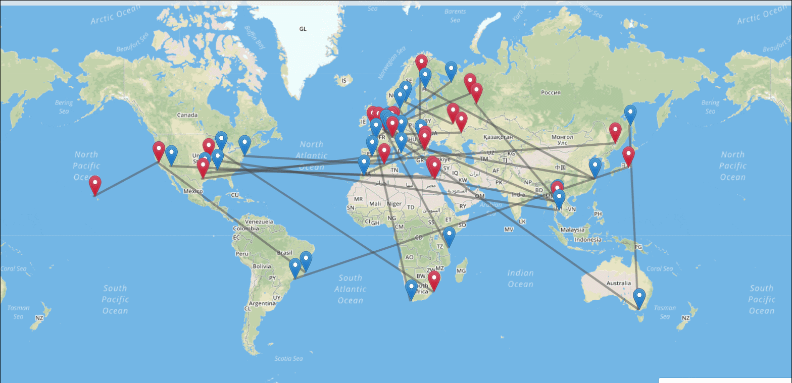
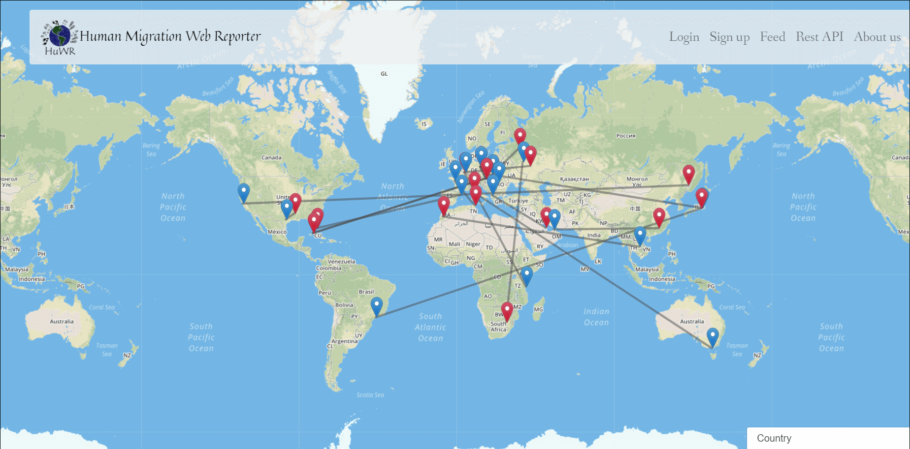

Human Migration Web Reporter
Pagina principala

Aceasta reprezinta pagina principala a aplicatiei pentru un utilizator nelogat. Deasupra paginii se poate vedea un navigator ce duce spre urmatoarele pagini:
- Login
- Inregistrare
- Feed-ul de migratii (unde se pot vizualiza migratiile ca lista)
- REST API (documentatia API-ului propus de noi)
- About us (cateva detalii despre noi)
In cele ce urmeaza vom prezenta cateva din functionalitatile pe care le ofera harta.
Animatie la accesarea site-ului web

Filtrarea migratiilor de pe harta
- toate migratiile
- cele mai recente
- cele mai importante

Detalierea unei migratii de pe harta(click pe linia dintre locatii)
Detalii despre o anumita locatie(click pe marker-ul unei locatii)

Statistici si filtrarea statisticilor doar la nivelul unei tari